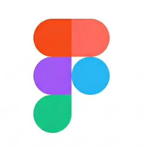
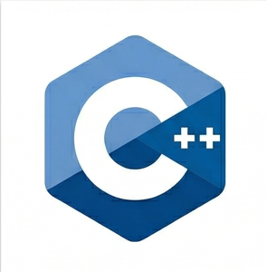

About
Welcome! I'm Francesco Savino, a young developer currently studying Computer Science at ITS 'Volta De Gemmis' in Bitonto. My academic journey goes hand in hand with my passion for software development and Cybersecurity. I build digital products, ranging from web design to pure automation.
Languages: C, C++, Java, Python, JavaScript.
Development & Automation: Website design, bot creation (Python), and API management.
Core Interests: Backend development, problem-solving, and Cybersecurity.
My goal is to write clean, secure, and highly performant code. Explore my repositories below to see how I work.
Skills


